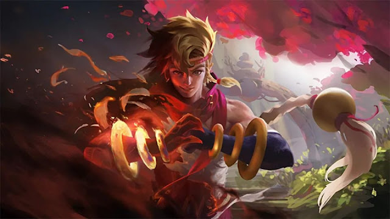

YU ZHONG
.jpeg)
Durante sua viagem à Terra do Amanhecer como aprendiz do Altar do Dragão, o jovem Yu Zhong começou a duvidar das crenças que foram ditas à ele por anos depois de ver a Lei da Selva durante a guerra entre a Luz e as Trevas, e conhecendo Luo Yi, que esperou pelo Dragão Feroz por anos. No entanto, quando ele retornou ao Altar do Dragão e exigiu a verdade ao seu mestre, o Grande Dragão, foi apenas repreendido. Durante o conflito com o jovem aprendiz Baxia, ele finalmente foi derrotado, caindo do penhasco.
Capítulo 2 : A Área Proibida História : Após cair do penhasco, Yu Zhong foi salvo por uma garota chamada Wanwan. Apesar de ele ter perdido tudo, ele se lembrou que Luo Yi tinha contado a ele o segredo de sua origem. Ele deixou seu espírito primordial para Wanwan, e então encontrou Luo Yi. Eles começaram sua jornada para a Área Proibida da Alma do Dragão para resgatar a Escama Reversa e assim mudar as Terras do Rio Cadia.
Capítulo 3 : Restauração da Escama Reversa. História : Yu Zhong havia absorvido com sucesso o poder da Escama Reversa na Área Proibida da Alma do Dragão, mas ele ficou gradualmente possuído pela Escama Reversa e ficou fora de controle. Nesse momento crítico, Wanwan usou o espírito primordial de Yu Zhong para ajudá-lo. Para a surpresa de todos, Yu Zhong não expulsou a Escama Reversa de seu corpo após recuperar a sanidade, mas combinou completamente com o espírito primordial.
Capítulo 4 : Retorno do Dragão Negro. História : Com a Escama Reversa e o espírito primordial, Yu Zhong masterizou todo o seu poder e se tornou o verdadeiro Dragão Feroz. Ele subiu aos céus na forma de Dragão Negro, olhando para essa terra antiga. Ele conquistará cada pedaço das Terras do Rio Cadia e esperar pelo duelo final com o Grande Dragão
YIN
Quem é Yin? Um dia, há dezessete anos atrás, um bebê foi deixado em um cesto que flutuou em direção às Quedas Florais, um vale sereno nos arredores do Altar do Dragão. O bebê foi adotado por um morador local e batizado de Yin, uma homenagem ao elemento da Terra para o ano do Tigre, o ano em que o garoto foi encontrado. Aos dez anos de idade, Yin se tornou um dos vários praticantes de artes marciais das Quedas Florais. Ele era magro, porém dotado de uma grande força que o fez ser visto como um gênio das artes marciais. Embora fosse poderoso, Yin não conseguia entender a intenção de matar, pois era bondoso por natureza. Para ele, toda luta era apenas uma luta entre amigos, pois o garoto nunca precisou lutar até a morte. Leia a biografia completa do herói e descubra como Yin conheceu Wanwan, Yu Zhong e teve o encontro fatídico com o deus maligno Lieh, que mudaria sua vida para sempre.